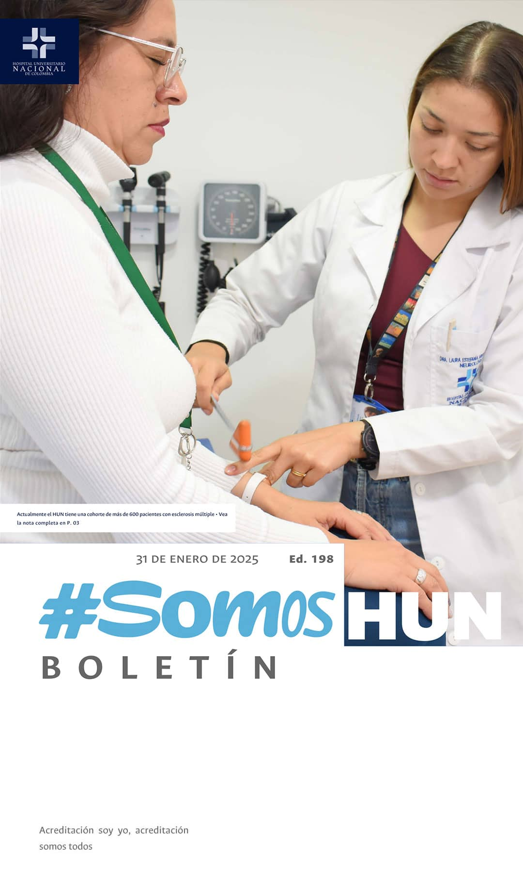
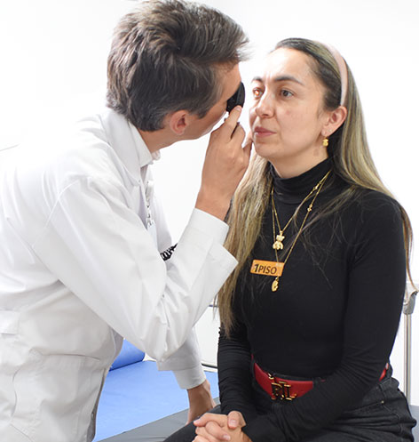
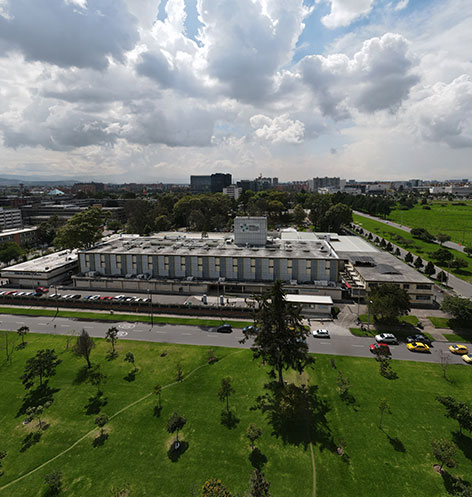
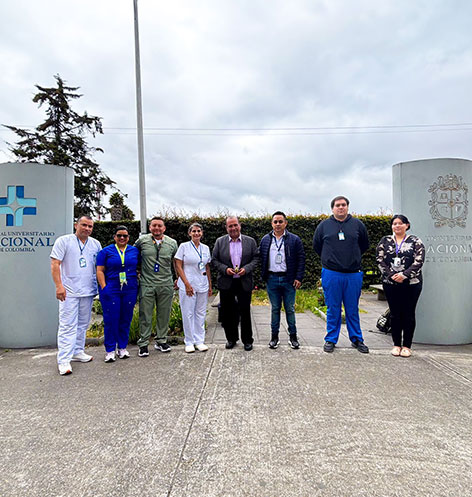

Ver todos los boletines
Camino a las
Clínicas de Excelencia
Clínicas de excelencia se proyectan a 2025Leer más
Expedición Andina,
llegó a lo más alto de América
La distinción Medalla al Mérito
“Pacho” paciente diagnosticado con riñón poliquístico, enfermedad congénita que le fue encontrada a los 32 años, llevó el mensaje de la donación de órganos al monte Aconcagua (Argentina), junto a otros alpinistas, convirtiéndose en la primera persona en el mundo en alcanzar esa altura. Su hazaña es uno de los resultados de la Expedición Andina “Un reto por la vida”, de la cual formamos desde 2023 y con la que buscamos que la sociedad tome la decisión de ser donante.Leer más

Arranca la VIII
Autoevaluación de los Estándares de Acreditación
La calidad superior es un camino de recursos inagotables hacia el mejoramiento continuo de los procesos para la atención del paciente, la contribución en la formación de profesionales y la investigación. Leer más

Hospital de Sarare visitó al HUN
para referenciar habilitación de la UCI
Desde el lunes 27 y hasta el 30 de Enero recibimos la visita del Hospital de Sarare ESE y sus delegados quienes se referenciaron con nosotros en el Sistema Único de Habilitación en lo que respecta a la UCI, de cara a la apertura de su Unidad de Cuidados Intensivos y la sala de Hemodinamia planeada para febrero.
Leer más
Únete al club de deportes del HUN
Acompañamos al Ejército El Hospital Universitario Nacional de Colombia, como institución líder en la promoción de la salud y el bienestar, abre esta oportunidad única para fomentar un estilo de vida activo y saludable entre sus trabajadores mediante la creación de un Club Deportivo.Leer más